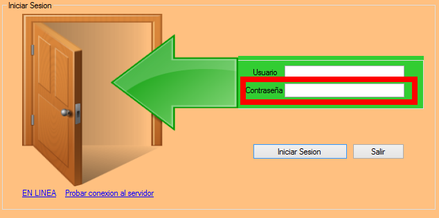

Riku
Como Inciar Sesion
1ero -Ingresa tu nombre de usuario.2do -Ingresa tu clave.

3ro -Pulsa el boton iniciar sesion.

4to -Epera hasta que habra el Panel Principal.
Notas Especiales
En el cuarto paso, el sistema podria tardar hasta dos minutos verificando sus credenciales con la base de datos.
En el cuarto paso, el sistema podria tardar hasta dos minutos verificando sus credenciales con la base de datos.